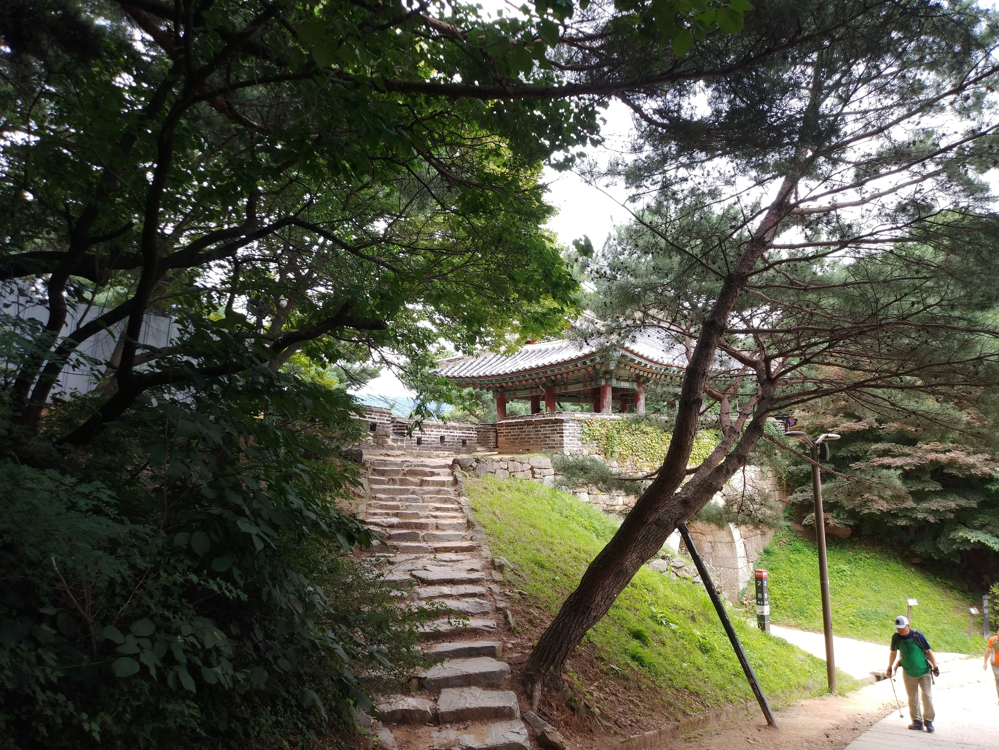
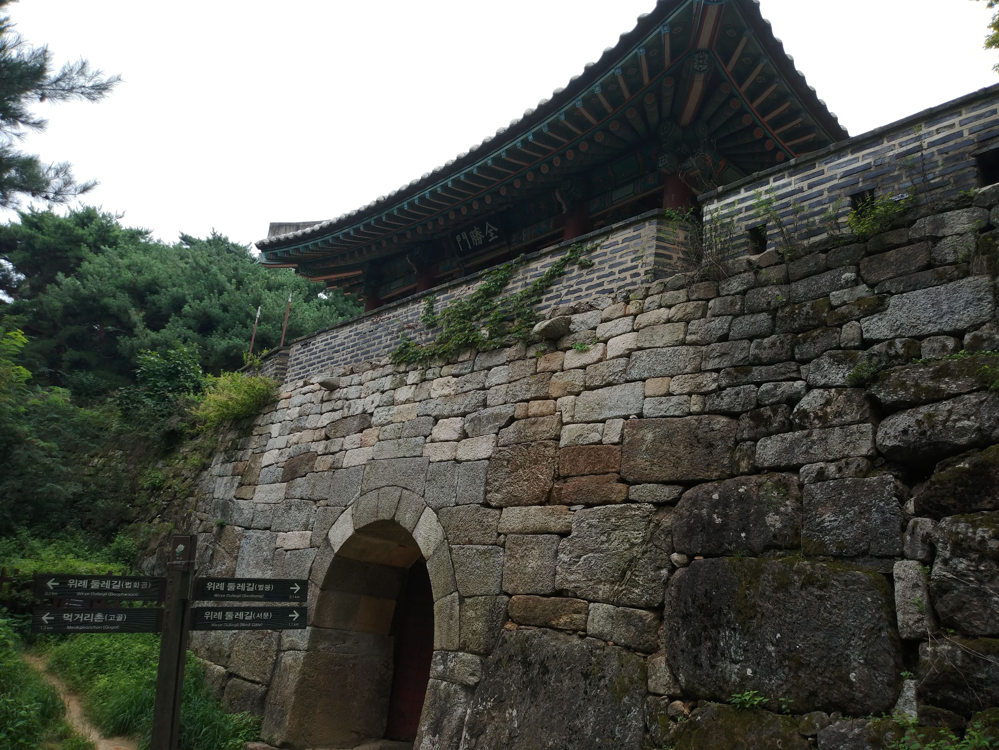
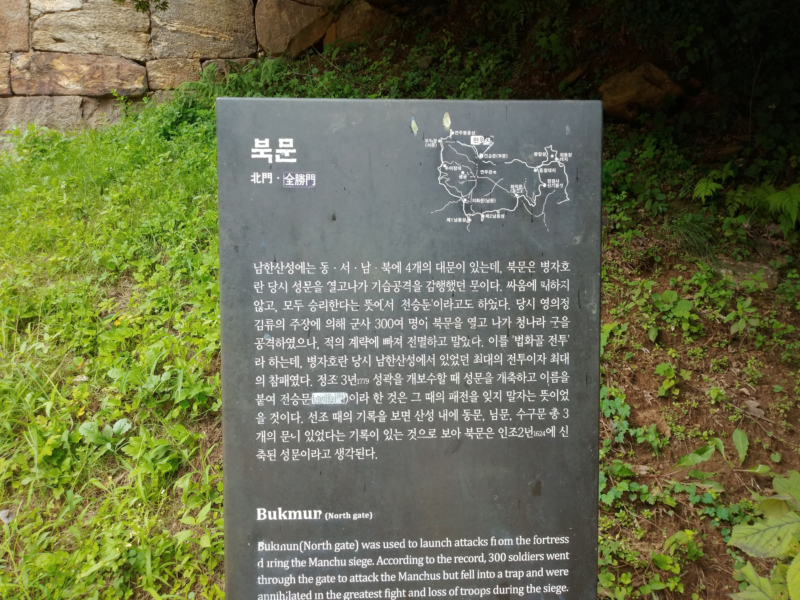
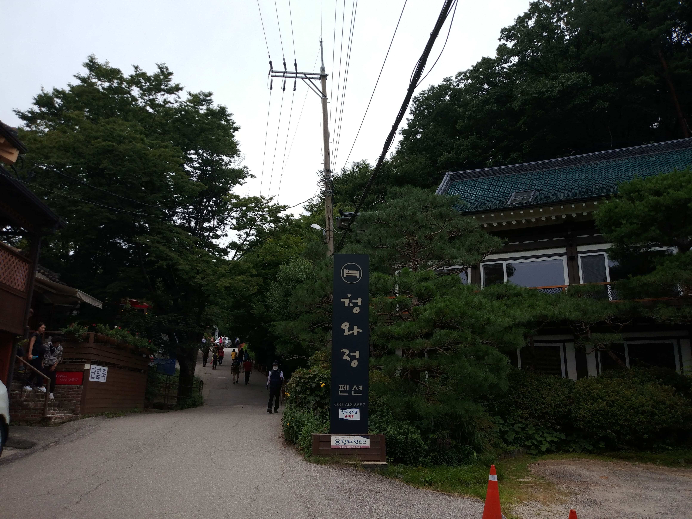
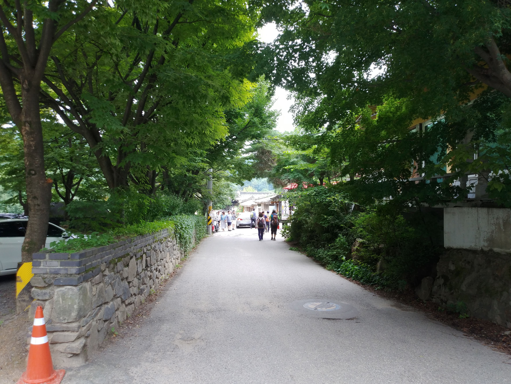
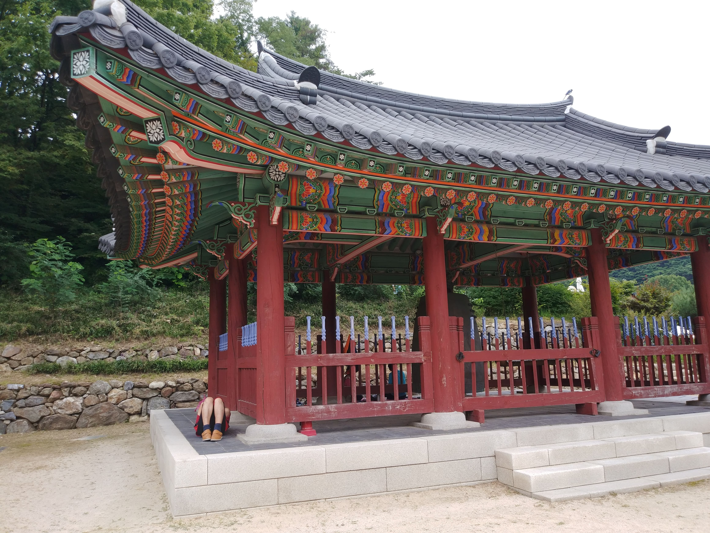
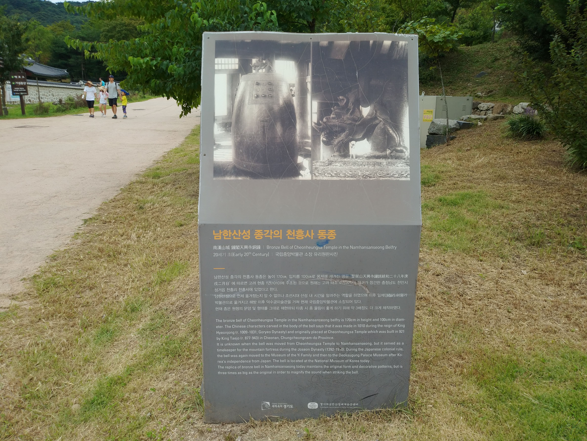
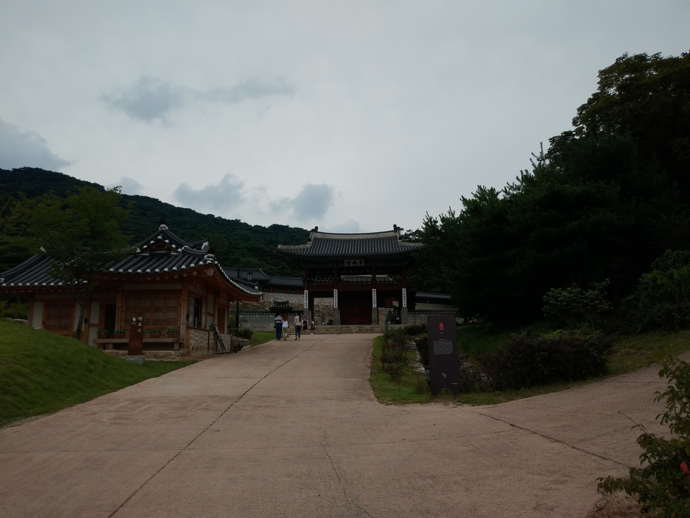
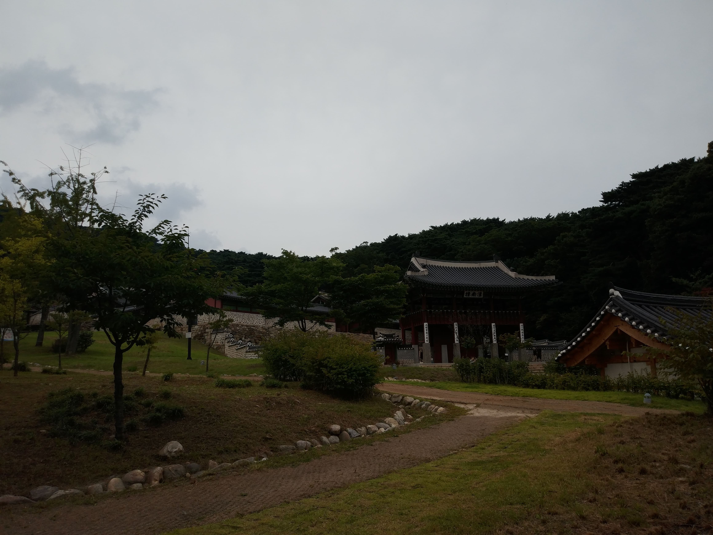

북문에서 출발지(로타리)로

북문
성내측에서 본 북문 전경

북문
성외측에서 본 북문 전경

북문 안내판
뼈아픈 내용이다

중간에서
로타리 근처에 이르니 음식점들이 있다

중간에서
음식점들로 변모한 모습이 보인다

로타리근처
종각이 보인다

동종 안내판
남한산성 종각의 천흥사 동종

산성행궁
산성행군 전경 (입장료가 비싸다)

산성행궁
멀리서 본 전경